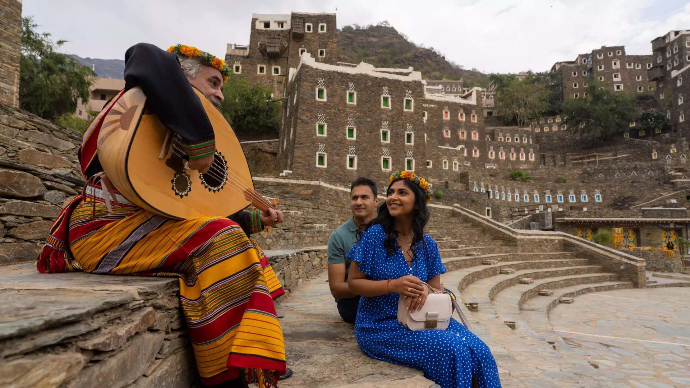
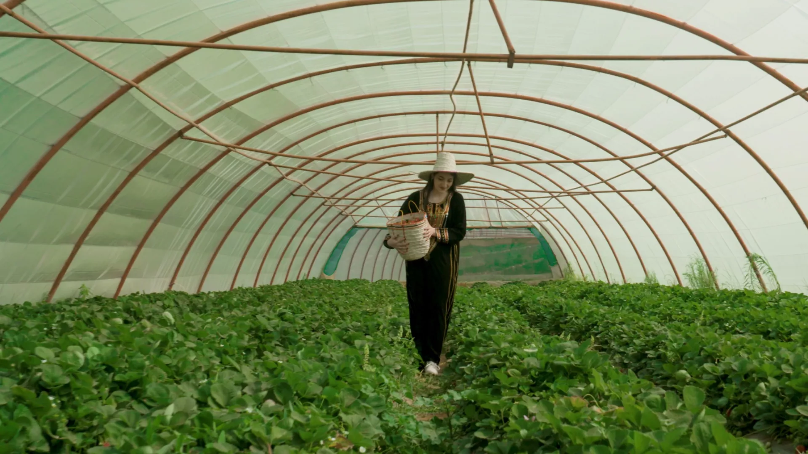
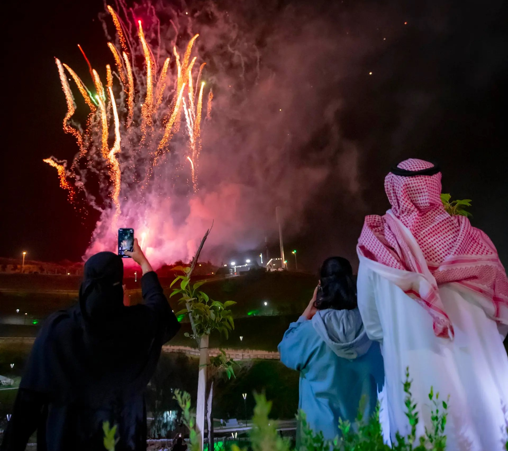
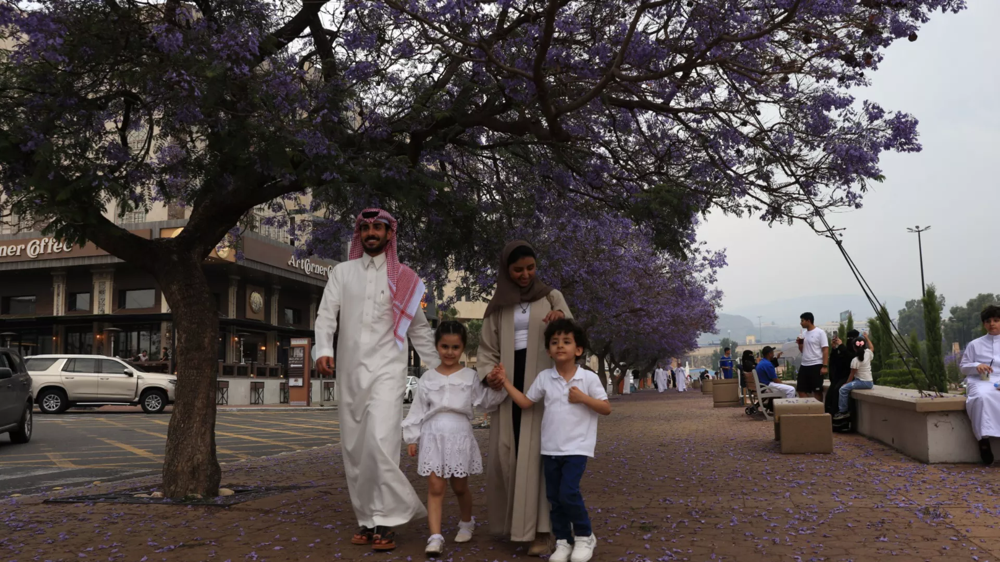
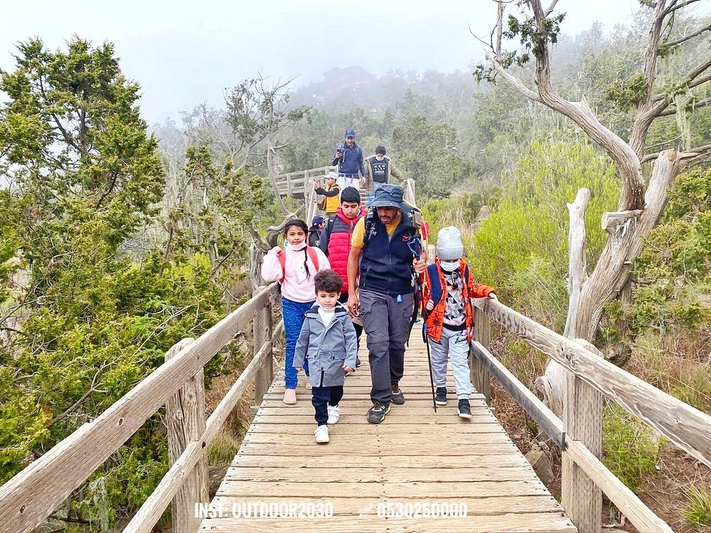

Folk Dances
Al-Kutwa Al-Junoobiya
It is an ancient war dance and one of the southern Saudi dances. It is distinguished by its diversity of melodies and calm rhythm in a way that makes it easy to perform the dance is widespread and famous in the Asir region.
Where to go ?
Rijal Al Maa Heritage Village
Writers and Readers Festival

Tourist Grape Farm
Al Baha Summer Festival
Art Street
Asir National Park
Restaurants
- Al-Qaryah Al-Sha'biyyah (Abha) - Offers traditional dishes in a heritage atmosphere. (4.5/5)
- Al-Saada (Abha) - Famous for seafood and grilled dishes. (4.3/5)
- Al-Saraya (Khamis Mushait) - Serves a variety of Arabic dishes. (4.4/5)
- Fatoor Faris (Abha) -Offer diverse and delicious breakfast. (4.5/5)
- Al-Multaqa (Abha) - Offers diverse dishes from local cuisine. (4.2/5)
- La Terrazza (Khamis Mushait) - Serves authentic Italian dishes with a beautiful view. (4.4/5)
- Al-Shuhada Restaurant (Jazan) - Specializes in seafood and traditional Jazan dishes. (4.5/5)